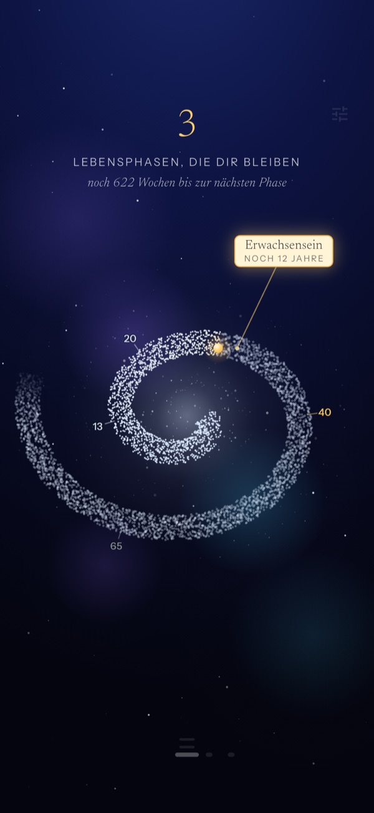
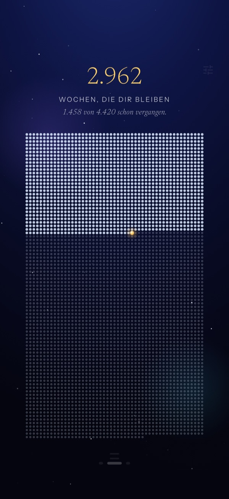
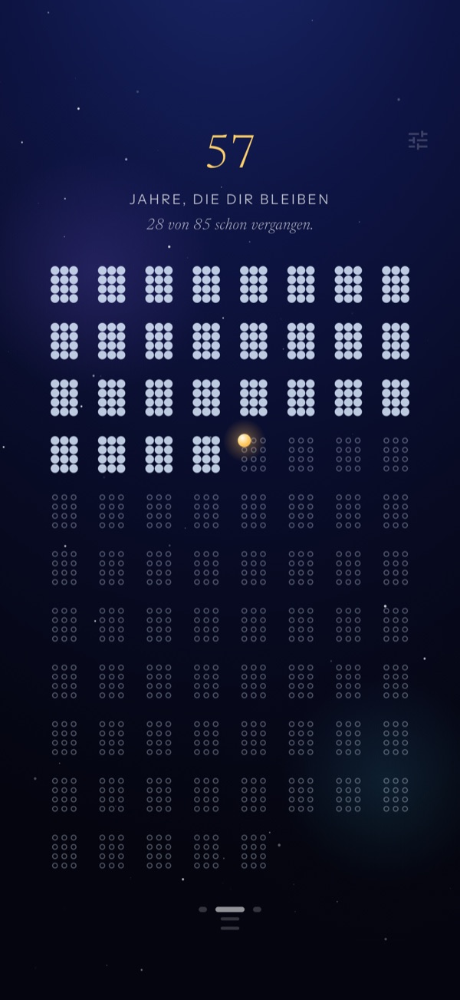
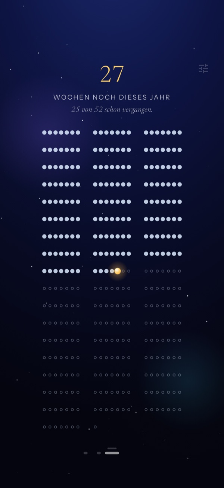

Lebensphasen
Deine Phasen als Milchstraße — was war, was ist, was kommt.

Dein Leben als Punkt
Dein Leben als Brett aus Punkten. Die meisten sind schon gefüllt. Punctum zeigt dir ruhig, wie viele bleiben — und macht aus dem Gedanken an das Ende einen Kompass.
Einmaliger Kauf · keine Werbung · kein Tracking

Das Brett
Punctum zeigt dir dein ganzes Leben als ein Brett aus Punkten. Was hinter dir liegt, ist gefüllt. Was bleibt, ist offen. Ein einziger, leuchtender Punkt ist das Jetzt — der Moment, in dem du gerade liest.
Drei Linsen
Wochen, Monate oder Jahre — und drei Blickwinkel auf dieselbe Zeit.
Deine Phasen als Milchstraße — was war, was ist, was kommt.

Jahr für Jahr, auf einen Blick.

Näher heran — die Wochen dieses einen Jahres.

Ruhig und privat
Kein Server, keine Cloud, kein Tracking, kein Konto. Nichts verlässt dein Gerät.
Kein Abo, keine In-App-Käufe, keine versteckten Kosten. Einmal gekauft, gehört es dir.
Heimbildschirm-Widgets erden dich — ohne eine einzige Benachrichtigung.
Jeder Punkt war einmal das Jetzt.